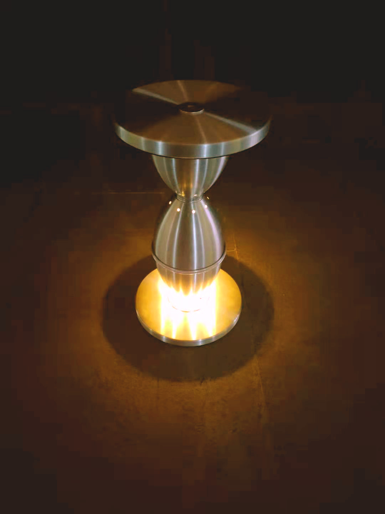
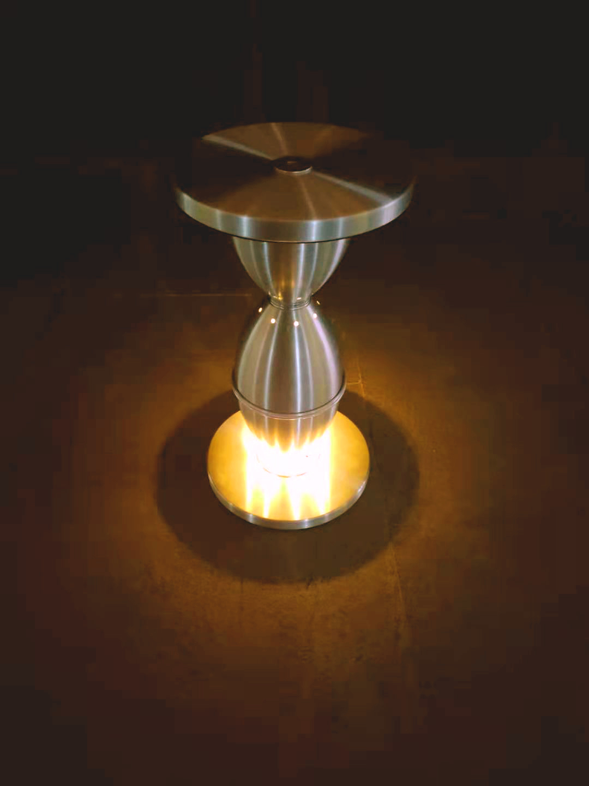
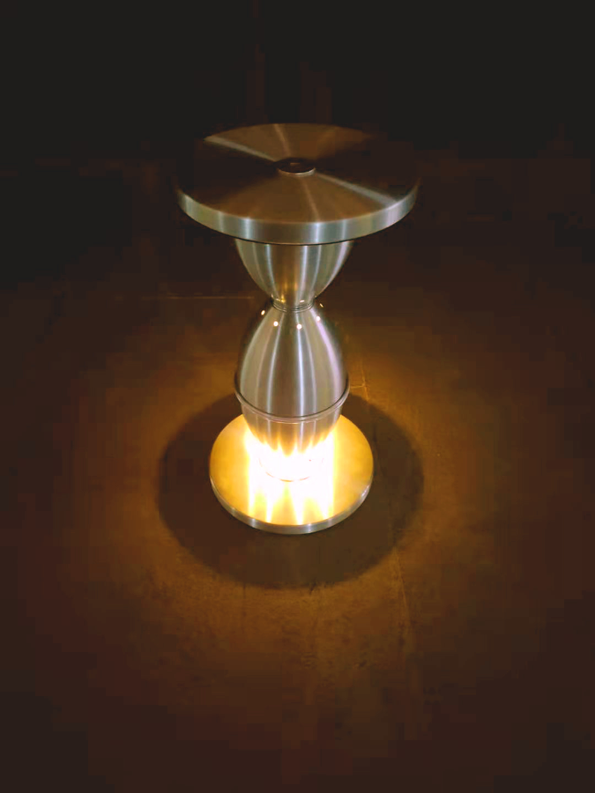

ROCKET STOOL
 

黑客意味着打破常规、突破现状。
我所理解的黑客精神即是挑战现有产品的组成秩序，并利用已有的部件创造与既有印象不同的产品体验。
ROCKET STOOL以IKEA铝制落地灯以及发光灯串作为基础部件，采用颠倒、叠加、穿插的方式对其进行重构。灯罩的组合形成具有科技感的外型，向下映照的灯光模仿喷射的火焰，营造出视觉上的上升感，以此打破坐凳给人的向下的方向体验。

黑客意味着打破常规、突破现状。
我所理解的黑客精神即是挑战现有产品的组成秩序，并利用已有的部件创造与既有印象不同的产品体验。
ROCKET STOOL以IKEA铝制落地灯以及发光灯串作为基础部件，采用颠倒、叠加、穿插的方式对其进行重构。灯罩的组合形成具有科技感的外型，向下映照的灯光模仿喷射的火焰，营造出视觉上的上升感，以此打破坐凳给人的向下的方向体验。